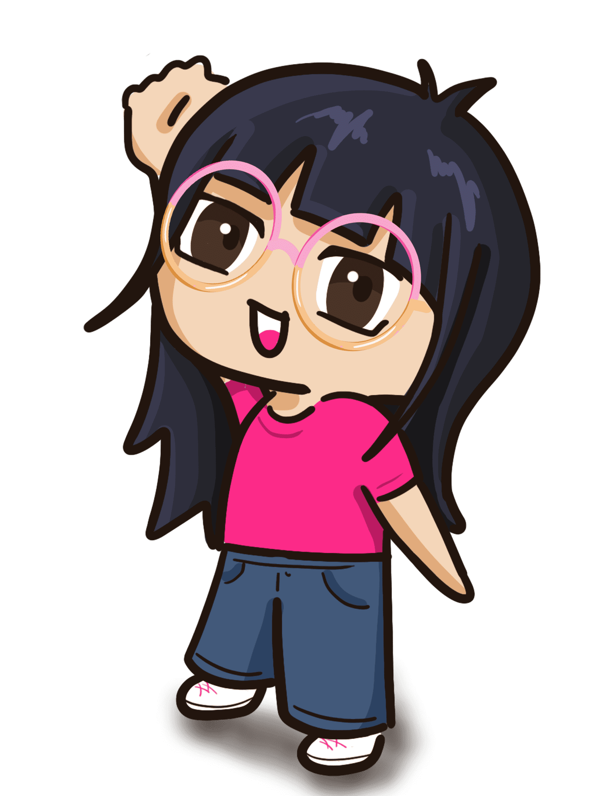

¿Quién soy yo?
Mi nombre es Orivel Alejandra Yañez Lara, nací el 16 de julio del 2002, por lo que tengo 22 años. Me encuentro estudiando la Licenciatura en Diseño Gráfico en la Benemérita Universidad Autónoma de Puebla y actualmente estoy cursando séptimo semestre. A lo largo de la carrera he podido adquirir muchos nuevos conocimientos y descubrir habilidades que no sabía que tenía, en la preparatoria solían gustarme mucho las ciencias exactas, en especial las matemáticas, pero terminé estudiando esta carrera en la que me dí cuenta que una de mis cosas favoritas es la ilustración.
Otra área que me llamó mucho la atención es el diseño web, es bastante interesante lo que se puede lograr, además de ser una de las áreas mejor pagadas del diseño, es por eso que estoy tomando la especialización de Desarrollo Digital, donde además voy a poder aprender diseño de apps.
Algunos de mis hobbies son ver series y leer. Disfruto de ver todo tipo de series, pero en especial asiáticas, ya sean coreanas, japoneas o chinas, pues son a menudo muy románticas y diferentes a las occidentales. En cuanto a la lectura prefiero la ciencia ficción y la fantasía, ya que los libros románticos suelen tener mucha tragedia también y suelo ser sensible a esas cosas.
Mi familia
Mi nucleo familiar esta compuesto por mi mamá, mi papá y mi hermana mayor. Me nombraron en honor a mi mamá quien también se llama Orivel, un nombre poco conocido pero que me alegro de compartir con ella, pues además tiene un lindo significado: "Oro bello". Mi mamá tiene 52 años y es mi persona favorita, siempre había sido ama de casa, por lo que se dedicó a cuidarnos a mi y a mi hermana, siempre estaba presente y nos apoyó en todo lo necesario. Actualmente tiene un negocio pero aún así sigue pendiente de nosotras.
Mi papá se llama Sergio y al igual que mi mamá tiene 52 años. Él tiene otro negocio: una purificadora de agua justo al lado de la tienda de mi mamá. Mi papá parece una persona seria pues es bastante introvertido, incluso a algunos de mis amigos les da miedo, sin embargo, es una persona bastante bromista.
Mi hermana mayor se llama Orivel al igual que mi mamá y yo, pero ella también tiene un segundo nombre que es por el que nos referimos a ella: Europa. Es mayor que yo por 3 años, por lo que tiene 25 y actualmente está estudiando una maestría en la Ciudad de México.
Los últimos miembros de mi familia son mis hijas, es decir, mis perritas: Naia e Itaka. Itaka es la mayor con 5 años, es una mezcla de chihuahua con fox terrier ratonero, y llegó a la familia como un regalo de una de mis amigas de prepa. Naia tiene apenas 2 años, a ella la adopté a través de una fundación que la rescató de la calle, por lo que no sabemos con certeza su raza, pero por sus características es muy parecida a un podenco o galgo.
Mis materias preferidas
Matemáticas
Las matemáticas eran mi materia preferida en la preparatoria, pues fue ahí cuando me dí cuenta que era buena en ellas. En tercer semestre me cambié de preparatoria y ahí al ver mi habilidad para la materia me empezaron a preparar para llevarme a muchos concursos. Esos años fueron muy divertidos para mí pues me gustó la experiencia de estar en concursos y salir a representar a la escuela. Una fórmula que aún recuerdo es la de c2=a2+b2.
Ilustración
Ya en la universidad una de mis materias preferidas es la ilustración, especialmente la ilustraación digital, me gustó mucho desde un principio por lo que trato de seguir practicando para mejorar y tal vez poder dedicarme a ser ilustradora o algún otro trabajo en el que pueda usar este recurso.
Desarrollo III
Es una de las optativas que decidí tomar en la carrera y hasta ahora me ha gustado bastante. A pesar de que a veces me siento unn poco perdida me gusta bastante el diseño de interfaces, también es una de las áreas a las que me podría dedicar.